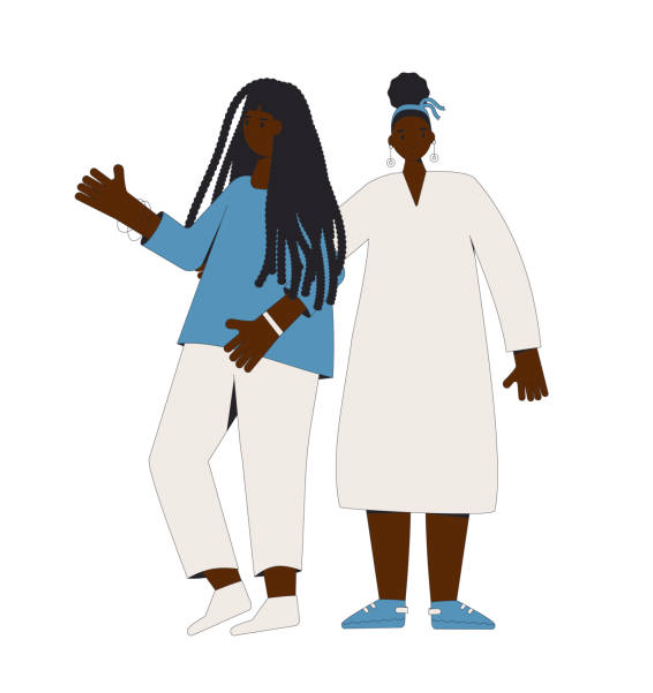
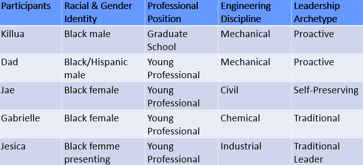
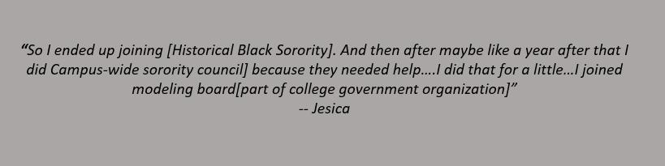
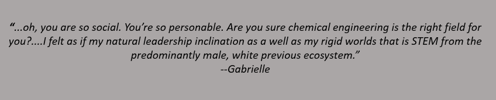
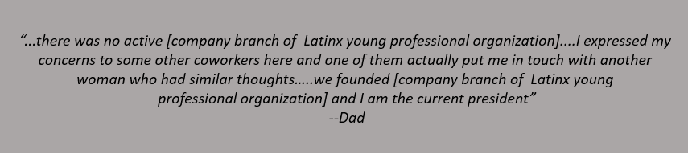
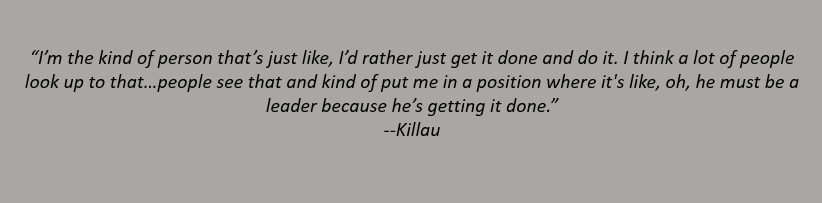
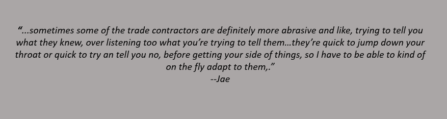

There are preconceived notions of what an engineer should be. Though
we are living in a growingly diverse world, engineers continue to
be seen as white men with a monolithic point of view. This image
has created an exclusive environment through discouraging the
participation of people of color and discouraging diversity of
thought. This discouragement has placed serious limitations on the
progression of the engineering field due to its limited
perspective on problems that effect more than just the predominate
group in the field.
Marginalized engineers becoming leaders has the power to provide
the field with the perspective it desperately needs and encourages
their success in the field. While diversity of staff and thought
are crucial to expanding the perspective of the engineering field,
this perspective can only be provided if it is accepted by
individuals in the field. Leaders ability to inspire others to
believe a mission or aim for a particular goal equips marginalized
engineering leaders with the skills to provide the perspective
shift that is needed in the engineering field. Leadership also
equips marginalized engineer with the skills to reach levels of
success that wouldn’t have possible for other marginalized
engineers. This study established archetypes of leadership that
allow Black and Latinx engineers to suceed in the field. In this
context, success is defined as the academic and professional
success, not satisfaction in the field.
 This study focuses on the stories of five Black and/or Latinx engineering students and young professionals. Their stories provided ensite on the experience of Black and Latinx individuals in engieering education and the professional world. Semi-structured interviews lasting between 1-2 hours were conducted. Each interview was audio-recorded and transcribed. Of the five participants, one was a graduate student and the remaining were young professionals. Two identified as men, two identified as female and one identified as femme-presenting. Their majors included mechanical engineering, civil engineering, chemical engineering, and industrial engineering. Thematic analysis was used to identify leadership archetypes and how their display of leadership allowed them to succeed in their engineering discipline.
Different forms of leadership exist for Black and Latinx engineers. While this group shares the experience of being marginalzed within society and in the field, different aspects of their identities outside of their race and field created different forms of leadership for them to excude. This study revealed two categories of leadership. The first category is traditional leadership. This category is defined by its connection to what society viewed made a good leaders such as charisma, being social, strength, and having extensive leadership experience. This presented one archetype with the same name and description as its category. The second category is non-traditional leadership. This category is defined by its subtleness and personalization. These individuals use traits such as observation, personal connection, and introvesion to inspire others to a particular goal. This category contains two archetypes: proactive leadership and self-preserving leadership.

Jesica’s continued interest and success in different organizations proves a pattern of successful leadership. Traditional leaders ability to be social and captivate an audience allows them to take on numerous leadership roles and continue to see success in them. However, as marginalized engineers, this group face unique struggles compared to others have this leadership form. This group often feels out of place in engineering. TTheir difference from softspoken and — view of engineering students makes people automatically view them as misplaced in the field. Gabrielle shared a similar experience when discussing her experience as a a young professional in engineering. Gabrielle says:

Though this archetypes is questioned for its presence in the engineering field, their ability to directly inspire a group towards a particular goal provides them with a place in the field and the opportunity to expand perspectives.



Jae’s use of her unique personality traits allowed her to inspire other people within her field. Because of the preconvience notions other employees had of Jae, she had to use skill s not often associat with leadership such as active listening, trust, and reassurance to build confidence in her ability and encourage coworkers to meet their goals. Because they can not directly inspire teams like other forms of leaders, their introverted and — traits make them a unique form of leadership. This leadership allows them to expand the perspective of some of their employes and lead their employees to particular goals.